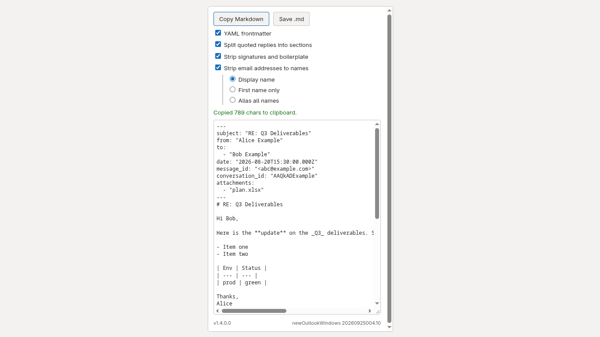

Copy as Markdown is a read-mode Outlook task pane add-in that converts the open email, including its quoted reply chain, into Markdown and copies it to the clipboard. It needs no account, sign-in, license key or purchase, and it has no server component. The task pane's static files are served from GitHub Pages at https://lonelyquasar.github.io/outlook-markdown-exporter/. No other network requests are made, and no message content leaves the user's device.
Test accounts and credentials
None required. Any mailbox can be used. The add-in only requests the MailboxItem.Read.User permission and reads the message currently open.
Supported hosts
New Outlook for Windows, Outlook on the web, and classic Outlook for Windows and Mac (Mailbox requirement set 1.8 or later). The screenshots below were taken in new Outlook for Windows.
Steps to test
Open any received email in Outlook. A message with a quoted reply chain exercises the most functionality.
On a user's first open the pane shows a three-step introduction card (what the add-in does, what the options change, that nothing leaves the device). Next/Done or Skip dismisses it and it does not return for that user; the Help link in the footer reopens it.
On the message, choose the Copy as Markdown button. In new Outlook and Outlook on the web it is under the "..." overflow menu on the message toolbar; in classic Outlook it is on the ribbon.
The task pane opens and converts the message immediately. A Markdown preview appears in the pane with a YAML frontmatter block (subject, sender, recipients, date, message id, attachment names) followed by the message body.
Click Copy Markdown. The status line reports the number of characters copied. Paste into any text editor to confirm the clipboard contents match the preview.
Click Save .md. The same text downloads as a .md file through the browser or host download mechanism.
Toggle any of the four checkboxes (YAML frontmatter, split quoted replies into sections, strip signatures and boilerplate, strip email addresses to names) or the three address-style radio buttons. The conversion re-runs and the preview updates. These choices persist between messages.
Expected results
The preview and clipboard text are plain Markdown with no raw HTML.
Quoted earlier messages in the thread appear as separate sections titled by sender and date when splitting is enabled.
Formatting that matters (headings, bold, italic, lists, links, tables) survives as Markdown syntax.
With address stripping enabled, email addresses are replaced by display names, first names, or stable aliases depending on the selected style.
Screenshots

The task pane after converting a message, light theme. Buttons, options, the status line and the Markdown preview are visible.